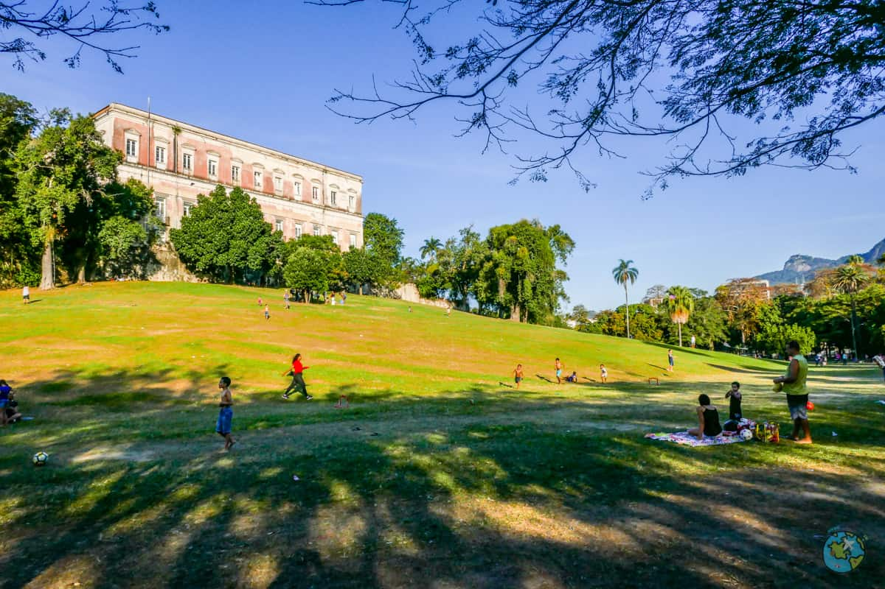

um passeio pela historia do rio/
A quinta da boa vista foi construida no seculo xix e fez parte da vida da familia imperial,enquanto estava sediada no brasil.
O palacio que abrigou D.PEDRO II, tornou -se o museu nacional,um dos mais importantes do país.APÓS o incêndio de 2018,o museu
passou por um intenso processo de reconstrução e foi parcialmente reaberto em setembro de 2025,mas se encontra fechado novamente para finalizar suas obras.
ÁLEM do pálacio , o parque mantém suas tradições com seus jardins e lagos, inspirados no estilo euroupeu , com amplos gramados e caminhos com sombras.
PARA conhecer o bio parque do rio
O bio parque do rio é outra opção de o que fazer na quinta da boa vista.O antigo zoológico foi totalmente reformulado e hoje segue o conceito de conservação e bem- estar animal.
LÁ os visistantes podem ver de perto girafas,hipopótamos , elefantes ,aves raras e outros animais em ambientes mas amplos e sustentáveis.
Aos fins de semana e feriados,o parque costuma ficar cheio,então compre o ingresso antecipado.
uma área de mais de 150 mil metros quadrados,a QUINTA da boa vista é um dos maiores parques urbanos do rio.
o espaço oferece área para tudo que vc possa imaginar:piquenique,caminhada,passeios de pedalinho, trilhas leves ,espaço para andar de skate,patins e bicicleta, rola brinquedis
para as crianças aos finais de semana (como pula pula) , e ás vezes tem até alguns eventos.É o espaço perfeito para curtir o dia inteiro,basta levar uma toalha,canga ou
cadeira de praia e aproveitar.AH,você PODE LEVAR SUA PRÓPRIA alimentação também ,ou consumir no local.


© 2026 rio.com